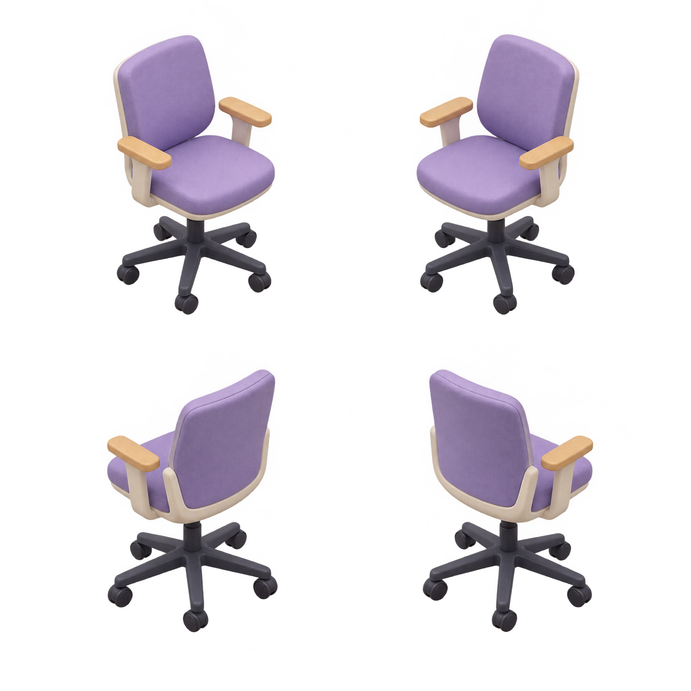
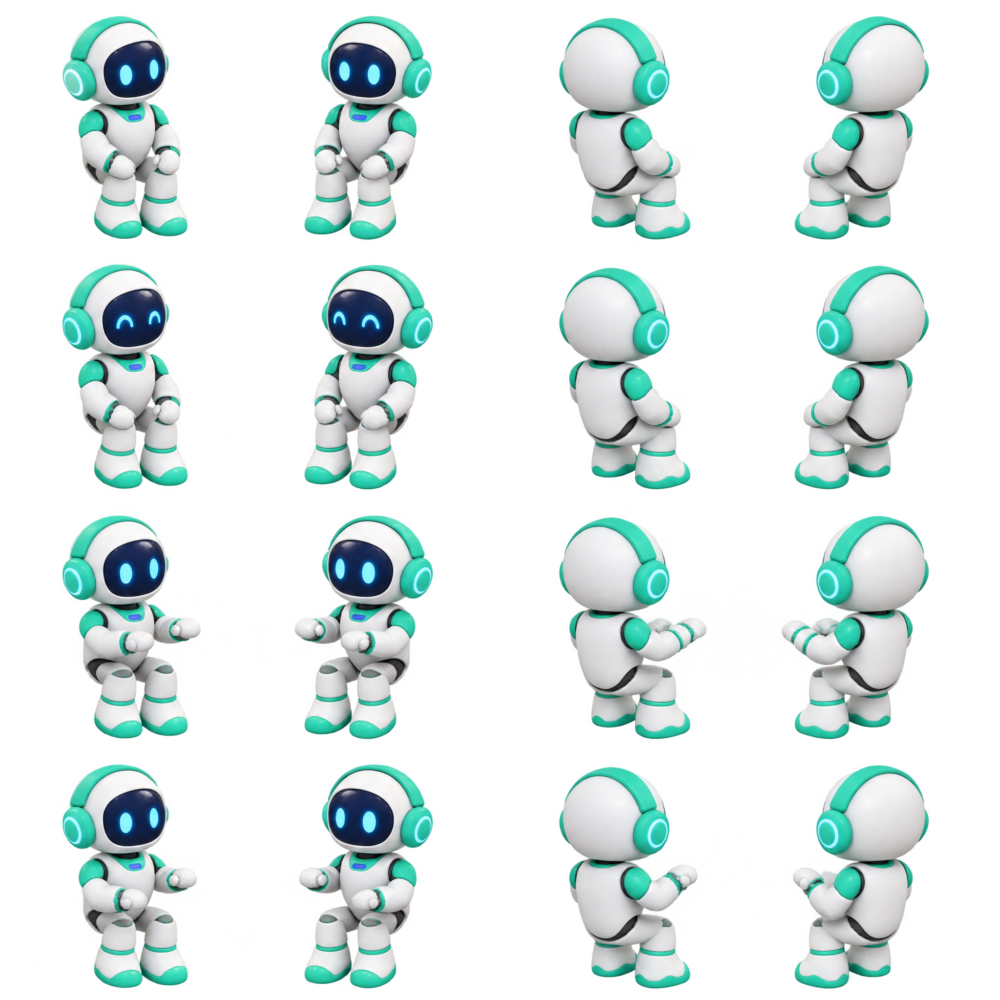
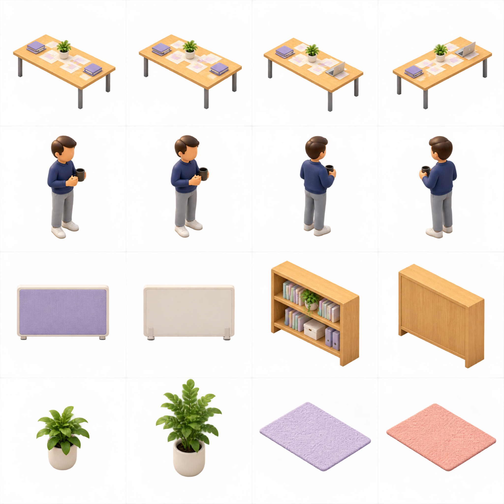

Original Higgsfield PNGs · separate layers · DEMO ANIMATION
Check transparent edges against both backgrounds. Open the expandable floor demonstration. Full integration notes are in README.md and REFERENCE-ASSET-AUDIT.md.
Isolated sprite only. Chair/body masking and desk alignment belong in the dashboard renderer.
Front pair above, rear pair below. Seat, back and armrests are supplied together.

Rows: idle, blink, typing A, typing B. Columns: front-left, front-right, rear-right, rear-left.

Rows: table variants; owner views; partition and bookshelf front/back; small plant, tall plant, lavender rug, coral rug. Table front variants omit the laptop and the front owner views are very similar.
